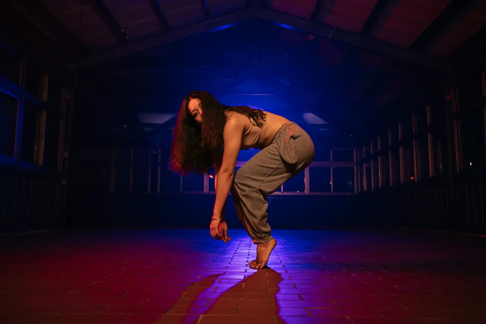

פסלStatue
עמידה קפואה לגמרי, בלי תזוזה ובלי נשימה נראית. הבסיס לכל עצירה.
 +
+למי שכבר יש לה גרוב, בסיס בכמה סגנונות ופריסטייל של שתי שמיניות לפחות. מכאן עובדים על עומק, דיוק ואופי.

ששת הקריטריונים כאן לקוחים משיטת השיפוט Trivium, שפיתחו הברייקרים Niels "Storm" Robitzky ו-Kevin "Renegade" Gopie, ושבה משתמשת התאחדות WDSF בתחרויות ברייקינג. הם מחולקים לשלושה: גוף, ראש ונשמה.
דרגו את עצמכן בכנות, מ-1 עד 5. ההערכה נשמרת רק בדפדפן הזה.
ברמה מתקדמת, מוזיקליות היא כבר לא "לרקוד על הקצב". זו היכולת לבחור בכל רגע מה בשיר אתן רוקדות, ולהחליף בחירה בכוונה.
בוחרים שיר עם הרבה שכבות. שומעים אותו פעם אחת בלי לזוז. אחר כך רוקדים אותו ארבע פעמים, ובכל פעם רק שכבה אחת: הקיק, הסנר, הבס, הקול. בפעם החמישית מחליפים שכבה בכל שמינייה, ובשישית באמצע שמינייה.
מעבר ל"וגם" יש עוד רבדים: אחת־אי־וגם־אה. לרקוד על ה"אה" שלפני האחת יוצר ציפייה. היט על ה"אי" נשמע כמו פיקאפ בתופים. סופרים בקול: אחת אי וגם אה, שתיים אי וגם אה.
באותו שיר אפשר לרקוד בחצי מהירות, כאילו השיר כבד ואיטי, ומיד אחר כך בכפול. המעבר בין השניים, בדיוק על תחילת שמינייה, הוא אחד הכלים החזקים בפריסטייל.
אפשר "להכות" כל צליל, ואפשר "לרכב" על הגרוב ולבחור רק צליל אחד. רקדניות מתקדמות יודעות מתי לעשות פחות. שמינייה שלמה של גרוב שקט ואז היט אחד נקי שווה יותר משמונה היטים.
כשהשיר אומר "שמיים" ולא מצביעים למעלה, זו בחירה. לפעמים הדבר החזק הוא לרקוד נגד המילים, או את הרגש שמאחוריהן.
מסלול אימון מקובל בפופינג, שמתאים לכל רקדנית היפ הופ. כל שלב בנוי על הקודם, ומתרגלים עם כמה שפחות מתח בשרירים.
עמידה קפואה לגמרי, בלי תזוזה ובלי נשימה נראית. הבסיס לכל עצירה.
אותה תנועה במהירות קבועה לגמרי, איטית מאוד, בלי האצות קטנות.
עצירה נקייה בלי שום רעד, כמו מטבע שנעצר. בלי לכווץ שרירים מיותרים.
תנועה שמתחלקת לעצירות רצופות, כמו מחוג של שעון. תרגיל: גל בזרוע עם 12 נקודות עצירה, חמש דקות ברצף.
דיים סטופים מהירים מאוד, שיוצרים אשליה של שובל. תרגיל: לעשות סטרובינג לתנועות יומיומיות, כמו לשתות או להסתרק.
השלבים האחרונים: רטט מבוקר בחלק גוף אחד, ושבירה של תנועה כמו סרטון שנתקע. משתמשים בהם במשורה, כתבלין ולא כמנה עיקרית.
רקדנית מתקדמת יודעת את הבסיס של כל סגנון כמו שהוא נלמד במקור, ולא רק בגרסה שמופיעה בכוריאוגרפיות. הטבלה היא רשימת בדיקה: מה צריך לשבת בגוף, ואיך בודקים שזה באמת שם.
| סגנון | מה צריך לשבת | איך בודקים |
|---|---|---|
| פופינג | פופ בזרועות, ברגליים ובצוואר, פרזנו, דיים סטופ, טיקינג, גל של 12 נקודות, טאטינג, גלגולי בוגלו | שמינייה של פרזנו שבה כל היט נשמע ונראה זהה, בלי רעד בעצירות |
| לוקינג | לוק, פוינט, סיבובי פרק כף יד, סקובי דו, פוינט של "אנקל סם", סטופ אנד גו, וויץ׳ א וויי, סקיטר ראביט | רצף של ארבע שמיניות בקצב פאנק, עם חיוך ואנרגיה עד הסוף |
| ברייקינג | טופ ראק בכמה וריאציות, ירידות לרצפה, שישה צעדים ושלושה צעדים, ת׳רדים, פריזים ומעברים ביניהם | סבב של 45 שניות עם כניסה, פוטוורק, פריז אחד וחזרה לעמידה, בלי עצירה באמצע |
| האוס | ג׳ק, שאפל, סלסה הופ, סקייט, לופטינג בסיסי | דקה ברצף בקצב 120 ומעלה, כשהג׳ק לא נעצר גם כשהרגליים מסובכות |
| קראמפ | סטומפ, ג׳אבים, דחיפות חזה, תנופות זרועות, ובעיקר דמות | שמינייה שבה האנרגיה עולה כל הזמן, בלי לאבד שליטה ובלי לפגוע באף אחת |
| וואקינג | סיבובי זרועות, פוזות, הליכה, ושילוב של מבט ודרמה | פוזה על כל מבטא בשיר דיסקו, כשהזרועות לא מאבדות את המעגל |

בבאטלים הנפוצים כל רקדנית מקבלת סבבים של 45 שניות עד דקה. בגמרים יש לפעמים סבבים ארוכים יותר. סבב טוב הוא סיפור קטן, לא אוסף של כל מה שאתן יודעות.
כניסה: תופסות את המוזיקה ואת המקום. בנייה: החומר שלכן, עם מגוון וטקסטורות. שיא: רגע אחד חזק, מתוזמן למשהו בשיר. סיום: נקי, על מבטא, בלי לברוח.
בשיטת Trivium, תגובה ליריבה היא חלק מהיצירתיות. לוקחות רעיון מהסבב שלה ועונות עליו בשפה שלכן, בלי להעתיק.
הרבה באטלים בנויים בשלבים: סבבי בסיס, סבבי טכניקה, סבבים עם מגבלה וסבבי יצירתיות. כדאי להתאמן באותו מבנה: שבוע של בסיס בלבד, שבוע של רק רצפה, שבוע של רק טקסטורה אחת.
מכינות "קונספטים" ולא רצפים קבועים: רעיון אחד של תנועה שאפשר לפתח בכל שיר. ככה הסבב מרגיש חי גם כשהדי־ג׳יי מפתיע.
בתחרות ההיפ הופ הבינלאומית Hip Hop International שופטים קבוצות בשני תחומים. כדאי לבנות את הקטע עם שניהם מול העיניים:
לפי ספר החוקים שלהם, קבוצה שמבצעת שלושה סגנונות מזוהים או יותר יכולה לקבל את מלוא הניקוד על מגוון, ושני סגנונות מקבלים חצי. כלומר: תכננו מראש אילו שלושה סגנונות נכנסים לקטע, ובאיזה חלק של השיר.
מעלים את השיר לאפליקציית העימוד, בונים שלד לפי השיר, ונותנים לכל מערך שם עם הסגנון שלו, למשל "שיא 1, לוקינג". ככה רואים בבת אחת אם יש מספיק שינויי רמה ומערך, ואם הסגנונות מפוזרים נכון.
החוקים מתעדכנים מעונה לעונה. לפני תחרות, בדקו את הגרסה העדכנית של ספר החוקים באתר התחרות.
| יום | מוקד | מה עושים |
|---|---|---|
| ראשון | בסיס של סגנון אחד | חצי שעה על רשימת הבדיקה של סגנון אחד, בסולם קצבים |
| שני | טקסטורות | סולם הטקסטורות על שלוש תנועות, ואז שמינייה חופשית שמשלבת שלוש טקסטורות |
| שלישי | מוזיקליות | תרגיל השכבות על שיר חדש, ופריסטייל של עשר דקות שמחליף שכבה בכל שמינייה |
| חמישי | יצירה | ארבע שמיניות חדשות, צילום, ומשוב בשיטת לרמן מחברה אחת |
| שישי | סייפר | סבבים של 45 שניות עם מגבלה מתחלפת, ושני סבבים חופשיים בסוף |